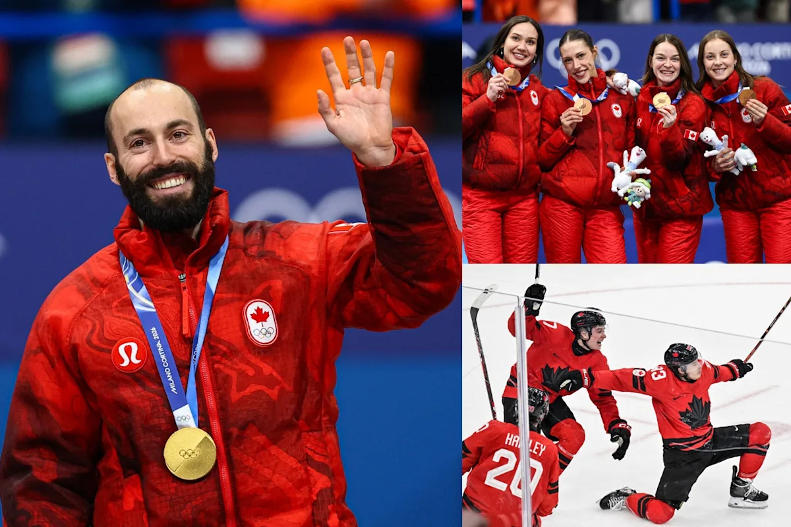

2026 Зимние Олимпийские игры, 12-й день: Канадская команда добилась успеха в скоровом беге, завоевав золото благодаря Дубису и бронзу в женском эстафете, а мужская хоккейная команда вышла в полуфинал после напряженной игры в овертайме.

Сейчас четвертый день подряд Канада занимает первое место на зимних Олимпийских играх в Милане-Кортина 2026, причем Стивен Дубо завоевал первое место в мужском забеге на короткой трассе на 500 метров.
Помимо пьедестала, 12-й день принес огромный триумф: мужская хоккейная команда одержала победу над Чехией со счетом 4-3 в овертайме четвертьфинального матча, причем Митч Марнер забил решающий гол. Теперь Канада встретится с Финляндией в полуфинале в пятницу.
Звезда, показавшая отличные результаты, Керти Сарауль также завоевала свой четвертый приз на этих Играх, выиграв бронзу вместе с Ким Бутин, Флоренс Брунель и Данаэ Блэ в женском забеге на 3000 метров.
Наконец, Рэйчел Хоман и женская канадская команда по хоккею сохранили свои шансы на выход в плей-офф, одержав важную победу над Италией.
Стивен Дубо (Канада) завоевал золотую медаль в мужском забеге на 500 метров на короткой трассе
Стивен Дубо (Канада) празднует победу после финала мужского забега на 500 метров на короткой трассе на зимних Олимпийских играх 2026 в Милане, Италия, среду, 18 февраля 2026 г. (Фото: Бернат Арманге/AP)
(ASSOCIATED PRESS)
Стивен Дубо выиграл золотую медаль в среду в мужском забеге на 500 метров на короткой трассе.
Его соотечественник Уильям Данджону в итоге получил штраф в финале, что дисквалифицировало его. Перемещаясь по внутренней трассе после середины гонки, Данджону выехал за пределы трассы — что является незаконным — а также, похоже, мешал другим соперникам. Это дало Дубо еще больше преимущества, который взял контроль над гонкой в начале и не позволил ему уступить.
Братья ван ‘т Вут из Нидерландов завоевали серебро и бронзу.
Это был второй медал для Дубоа на Зимних Олимпийских играх 2026 года и пятый, который он завоевал на протяжении своей выдающейся карьеры.
Канадская мужская хоккейная команда одерживает победу в овертайме над Чехией
Игроки команды Канады празднуют победу своей команды со счетом 4-3 в овертайме в матче четвертьфинала мужского турнира на Миланских Олимпийских играх 2026 года в Милано, на Ледовом Хоккее Arena. (Фото: Брюс Беннетт/Getty Images)
(Брюс Беннетт через Getty Images)
Поиски золотой медали канадской мужской хоккейной командой продолжаются с захватывающей победой со счетом 4-3 в овертайме над Чехией.
В течение игры было много героев, с которыми Канада несколько раз отставала. В конечном итоге, Канада одержала победу, когда Митч Марнер забил победный гол в овертайме.
Помимо выдающейся победы, два основных сюжета привлекли внимание мира хоккея.
Во-первых, Сидни Кросби покинул игру из-за травмы после того, как Радко Гудас из Чехии нанес ему пару ударов. Капитан команды Канады не вернулся, и нация затаила дыхание, надеясь, что он вернется на полуфинал в пятницу.
В более позитивном ключе, Коннор Макдэвид установил рекорд по количеству очков, набранных одним игроком НХЛ на Олимпийских играх, и это. Он ассистировал в двух первых голах Канады, сначала Макклину Сельбрини, который открыл счет, а затем Натану МакКиннону, который сравнял счет 2-2.
Дональд Трамп предлагает безумную идею о «государственности» для другой страны после победы в бейсболе
 HuffPost
HuffPost
641
 The Sporting News
The Sporting News
Я искренне хохотал над каждым из этих случайных людей, которые внезапно сделали самые смешные комментарии
 BuzzFeed
BuzzFeed
Тео из «Coronation Street» внезапно атакует Тода в шокирующей истории о свадьбе
 Digital Spy
Digital Spy
Чехия затем драматически вернула лидерство благодаря Ондрею Палату, оставалось менее семи минут до конца, хотя это произошло с некоторыми спорами, так как казалось, что на льду было шесть игроков перед голом.
Канаде необходимо было проявить глубину состава, когда отсутствовал Кросби, и именно Ник Сузуки ответил на этот вызов, когда это было необходимо. Всего за три минуты до конца третьего периода Сузуки совершил невероятный бросок, который попал в ворота чешского вратаря Лукаша Досталя, и сравнял счет.
Сузуки играл на правом фланге, чтобы вписаться в этот насыщенный состав, но после отсутствия Кросби вернулся в центр, и это проявилось в решающей, изменившей ход игры, ситуации.
Популярный канадский вратарь Джарден Бинингтон затем сохранил надежду для своей команды, совершив важный сейв один на один непосредственно перед окончанием третьего периода.
В дополнительном периоде — где игра проходит 3 на 3 в течение 10 минут для четвертьфиналов — Бинингтон совершил еще один решающий сейв, который открыл путь для Марнера.
После Макдэвида, МакКиннона и Кейла Макара, когда главный тренер Джон Купер сделал ставку на мощную игру, Марнер сумел обойти всех трех чешских игроков, а затем его великолепный бросок попал в дальний угол.
Похвала чешской команде, поскольку это была совершенно другая игра, чем та, которую Канада увидела на групповом этапе, когда они выиграли со счетом 5:0. Европейская команда была более физичной на протяжении всей игры и идеально реализовала свой план игры.
Это была их лучшая игра на турнире, но в конечном итоге Канада нашла способ победить, несмотря на трудные обстоятельства, связанные с потерей своего капитана.
Следующим матчем будет полуфинал между Канадой и Финляндией в пятницу, а также США против Словакии.
Команда канадских женщин на короткой дистанции завоевала бронзу в эстафете 3000 метров
МИЛАН, ИТАЛИЯ — 18 ФЕВРАЛЯ: Кورتни Сараульт из Канады, Данаэ Блей из Канады, Ким Бутин из Канады, Флоренс Брунель из Канады празднуют с флагом после участия в эстафете женской 3000 метров в 12-й день соревнований по шорт-треку — Зимние Олимпийские игры «Милано Кортина 2026» в Миланской ледовой арене, 18 февраля 2026 года в Милане, Италия. (Фото: Joris Verwijst/BSR Agency/Getty Images)
(BSR Agency via Getty Images)
Женская команда по шорт-треку из Канады завоевала бронзовую медаль. Они возглавлялись Миланской олимпиады, звездой Кورتни Сараульт, а также Ким Бутин, Флоренс Брунель и Данаэ Блей.
Эта медаль — четвертая, которую Сараульт завоевала на этих Олимпийских играх, и вторая бронзовая.
Южная Корея завоевала золотую медаль, а Италия — серебряную.
Канадские женщины лидировали большую часть гонки, но, похоже, исчерпали свои силы в конце, что позволило Южной Корее и Италии обойти их.
Команда «Нидерланды», занимающая первое место в мире, также участвовала, но столкнулась с неудачей.
Команда Рэйчел Хоман (Канада) поддерживает надежды на выход в плей-офф
Рэйчел Хоман из команды «Канада» наблюдает за игрой во время матча между командами «Канада» и «Италия» в рамках женской групповой стадии в 12-й день Зимних Олимпийских игр «Милано Кортина 2026» в Олимпийском стадионе «Кортина» по хоккею. (Фото: Richard Heathcote/Getty Images)
(Richard Heathcote via Getty Images)
Рейчел Хоман и женская сборная Канады продлили свою победную серию до четырех подряд, победив Стефанию Констанни и Италию со счетом 8-7 в дополнительном периоде во вторник.
После того, как матч завершился вничью со счетом 7-7, когда Констанни сравняла счет в 10-м периоде, Хоман смогла одержать победу, выбрав один камень в дополнительном периоде, имея преимущество.
Эта победа улучшила рекорд Канады до 5-3 и принесла ей третье место в турнире, разделяя его с Южной Кореей и Соединенными Штатами. В следующем раунде осталось сыграть только один матч.
Только четыре лучшие команды выходят в плей-офф и получают шанс бороться за медали.
Финальный матч сборной Канады в рамках группового этапа против сборной Гима Эун-джи из Южной Кореи состоится в 8:05 утра по восточному времени/5:05 утра по тихоокеанскому времени, где победа гарантирует выход в плей-офф.
Если Хоман и Канада пройдут в плей-офф, полуфиналы пройдут в пятницу.
Мужская сборная Канады продлевает победную серию до четырех подряд
Марк Кеннеди, Брэд Джек, Брет Галлант и Бен Хеберт из Канады после победы над Италией. Фото: REUTERS/Issei Kato
(REUTERS / Reuters)
Брэд Джек и мужская сборная Канады просто не могут остановиться.
Сборная Джека выиграла 8-3 у Жоэля Реторна и Италии во вторник, потребовалось всего семь периодов, чтобы одержать победу.
После того, как Канада отставала 3-0 после трех периодов, сборная Канады совершила мощный камбэк, набрав 8 очков за следующие четыре периода, включая «стел» в шестом периоде.
Эта победа улучшает рекорд Канады до впечатляющих 7-1 и гарантирует, как минимум, второе место в этапе «круговой». Швейцария лидирует с безупречным результатом 8-0 и будет стремиться завершить предварительный этап без поражений, играя против хозяев, Италии.
Канада завершит свой этап «круговой» в четверг против Норвегии в 3:05 утра по восточному/12:05 утра по тихоокеанскому времени, а полуфиналы запланированы на 13:05 по восточному/10:05 утра по тихоокеанскому времени.
Марк Макморрис не смог попасть в топ-3 в финале «слоупесталя»
Марк Макморрис из команды «Канада» реагирует после участия во втором заезде квалификации мужского сноуборда «слоупестля» на девятый день зимних Олимпийских игр в Милане-Кортине 2026 года в Livigno Snow Park. (Фото: Дэвид Рамос/Getty Images)
(Дэвид Рамос, Getty Images)
Канадец Марк Макморрис не сможет завоевать четвертую подряд олимпийскую медаль.
32-летний спортсмен отдал все силы, но в среду, в финале мужского сноуборда «слоупестля», он не смог добиться успеха, после того, как совершил неудачный падение в последнем заезде, заняв восьмое место.
Су Имин из Китая выиграл золотую медаль, Таига Хасегава из Японии занял второе место, а Джейк Кантер из США – третье.
Само по себе то, что Макморрис смог участвовать в соревнованиях после аварии 4 февраля, когда он получил сотрясение мозга, ушиб тазовую кость и растяжение мышц живота, – уже является достижением.
Он завоевал бронзовые медали на каждом из своих трех предыдущих визитов на Олимпийские игры.
Официальной информации пока нет, но есть вероятность, что эти Миланские игры станут последними для Макморриса.
Больше новостей о команде Канады в 12-й день
- Спринт женской команды: свободный лыжный спринт: Канадская команда, состоящая из Элисон Макки и Лилиан Гангон, заняла шестое место в женском лыжном спринте свободного стиля во вторник. Золотую медаль завоевала Швеция, а серебро и бронзу – Швейцария и Германия.
- Спринт мужской команды: свободный лыжный спринт: Антуан Кир и Жаксье Маккивер из Канады заняли шестое место в мужском лыжном спринте свободного стиля во вторник. Золотую медаль завоевала Норвегия, а серебро и бронзу – Соединенные Штаты и Италия.
- Лыжный спорт: прыжки с трамплина: Несмотря на то, что Марион Тэнальт во вторник заняла первое место в квалификации, она не смогла пройти в финальный этап женского соревнования по прыжкам с трамплина, едва не попав в тройку лучших. Чжоу Мэнтао и Шао Цзи из Китая завоевали золото и бронзу, а Даниэль Скотт из Австралии – серебро.
- Лыжный спорт: слалом: Лауре Сто-Гермен возглавила четверку канадских спортсменок, участвовавших в женском слаломе во вторник, заняв 12-е место. Али Нульмайер, Эмилия Смарт и Киара Александр заняли 16-е, 27-е и 35-е места соответственно. Микела Шиффри из США завоевала золотую медаль, Камиль Раст из Швейцарии – серебро, а бронзовую медаль – Анна Свенн-Ларссон из Швеции.
- Сноуборд: слоупстайл: Лори Блуан из Канады заняла 5-е место в женском соревновании по слоупстайлу во вторник. Ее соотечественница Жюлетт Пелешо заняла 9-е место. Мари Фукада и Кокомо Мурасе из Японии завоевали золото и бронзу, а Зои Садоуски-Синн от Новой Зеландии – серебро.
- Биатлон: эстафета 4 X 6 км: Канадская команда, состоящая из Паскаль Парадис, Шило Руссо, Бениты Пейфер и Надии Мозер, к сожалению, была обогната в женской эстафете 4 X 6 км во вторник, и, следовательно, не смогла завершить гонку. Золотую медаль завоевала Франция, серебро – Швеция, а бронзовую – Норвегия.